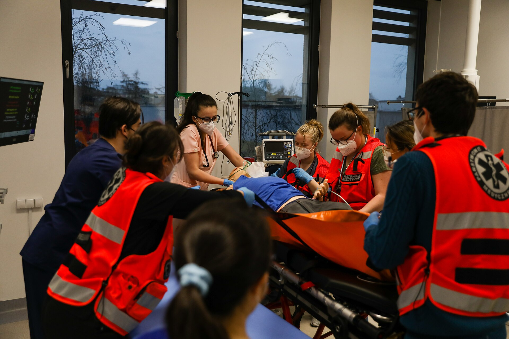

classificação = como começou · o meio do abalo mente · o tratamento depende
Achado / pegadinha · Pág. 05 de 07
Dois braços na rua — o início classifica
Dois braços se debatendo na rua. Generalizada automática? Não — o cenário de porta/SAMU que mais gera erro de classificação.
O cenário que engana
Cenário de porta/SAMU: paciente em abalos clônicos com os dois membros na rua ou na emergência. Pergunta de classificação: essa crise é focal ou generalizada?
A tentação errada
Tendência errada: olhar os dois braços se movimentando e fechar generalizada só por isso.
A regra de ouro — o início classifica
O início classifica.
Se começou nos dois lados → crise generalizada.
Se começou em um lado só e depois foi para o outro → crise focal (mesmo com abalos bilaterais no momento do atendimento).
Ver dois membros em abalos não fecha generalizada se o início foi unilateral.
Isso é crucial porque o tratamento depende da classificação.
Como recuperar o início
Diante de paciente se debatendo dos dois lados: buscar informação sobre o início. Fontes: o próprio paciente quando recuperar a consciência (se lembrar) ou testemunha que viu o começo unilateral antes da generalização motora.
Cuidado com o detalhe: classificação = como começou, não = o que se vê no meio do abalo bilateral.
Estado atual dois braços em abalos no atendimento
Como começou?
Escolha uma opção para classificar.
Duas timelines do início. Passe o cursor (ou Tab + Enter): a armadilha mostra os 2 braços batendo agora; a faixa focal mostra 1 → 2 (começa em um lado); a generalizada mostra 2 desde o 1º segundo. O banner dourado é o mantra.

Cena de porta — atendimento pré-hospitalar e transferência em ambulância (treino educacional). É aqui, com dois membros em abalos, que a pergunta “como começou?” decide a classificação. Fonte: Wikimedia Commons — Cross-training U.S. Army / National Guard · domínio público (PD-USGov).
Pegadinha de prova
Dois braços batendo agora ≠ generalizada de início.
O que a banca quer
Anamnese do primeiro segundo + consciência de que generalização motora secundária não reclassifica o início.
Revisão ativa
Quais as duas perguntas binárias sobre o início?
Quem pode contar o começo se o paciente não lembra?
Por que o tratamento “sente” esse erro?
Quiz
Conexão
Generalizada de verdade existe — e não é “cérebro 100% aceso”.